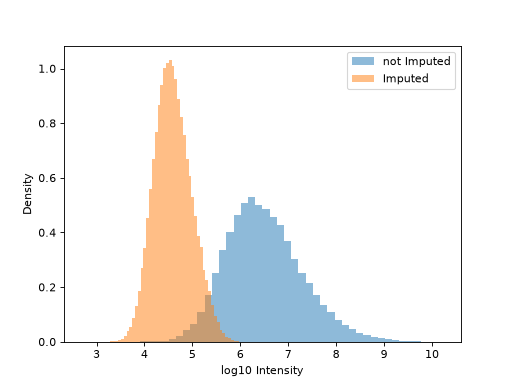

Imputation#
Autoprot Preprocessing Functions.
@author: Wignand, Julian, Johannes
@documentation: Julian
- autoprot.preprocessing.imputation.dima(df, cols: list[str] | Index, selection_substr=None, ttest_substr='cluster', methods='fast', npat=20, performance_metric='RMSE', print_r=True, min_values_for_imputation=0, return_cols=False, suffix='_imputed')[source]#
Perform Data-Driven Selection of an Imputation Algorithm.
- Parameters:
df (pd.DataFrame) – Input dataframe.
cols (list of str or pd.Index) – Colnames to perform imputation on. NOTE: if used on intensities, use log-transformed values.
selection_substr (str) – pattern to extract columns for processing during DIMA run.
ttest_substr (2-element list or str) –
For statistical interpretation based on the t-test, the RMSEt ≔ RMSE(tR, tI) serves as rank criterion, where t is the t-test statistics calculated from the observed data R and the imputed data O.Todefine the null hypothesis H0, the group assignments of the samples have to be specified by the user.
If is string, two elements need to be separated by ‘,’ If is list, concatenation will be done automatically. The two elements must be substrings of the columns to compare. Make sure that for each substring at least two matching colnames are present in the data.
methods (str or list of str, optional) – Methods to evaluate. Default ‘fast’ for the 9 most used imputation methods. Possible values are ‘impSeqRob’,’impSeq’,’missForest’, ‘imputePCA’,’ppca’,’bpca’, …
npat (int, optional) – Number of missing value patterns to evaluate
performance_metric (str, optional) – Metric used to select the best algorithm. Possible values are Dev, RMSE, RSR, pF, Acc, PCC, RMSEt.
min_values_for_imputation (int, optional) – Minimum number of non-missing values for imputation. Default is 0, which means that all values will be imputed.
print_r (bool) – Whether to print the R output to the Python console.
return_cols (bool, optional) – Whether to return the columns that were imputed. The default is False.
suffix (str, optional) – Suffix to add to the imputed columns. Default is ‘_imputed’.
- Returns:
pd.DataFrame – Input dataframe with imputed values.
pd.DataFrame – Overview of performance metrices of the different algorithms.
list of str – Columns that were imputed.
Examples
We will use a standard sample dataframe and generate some missing values to demonstrate the imputation.
>>> from autoprot import preprocessing as pp >>> import seaborn as sns >>> import pandas as pd >>> import numpy as np >>> iris = sns.load_dataset('iris') >>> _ = iris.pop('species') >>> for col in iris.columns: ... iris.loc[iris.sample(frac=0.1).index, col] = np.nan
>>> imp, perf = pp.dima( ... iris, iris.columns, performance_metric="RMSEt", ttest_substr=["petal", "sepal"] ... )
>>> imp.head() sepal_length sepal_width petal_length ... sepal_width_imputed petal_length_imputed petal_width_imputed 0 5.1 3.5 1.4 ... 3.5 1.4 0.2 1 4.9 3.0 1.4 ... 3.0 1.4 0.2 2 4.7 3.2 1.3 ... 3.2 1.3 0.2 3 4.6 3.1 1.5 ... 3.1 1.5 0.2 4 5.0 3.6 1.4 ... 3.6 1.4 0.2
[5 rows x 9 columns]
>>> perf.head() Deviation RMSE RSR p-Value_F-test Accuracy PCC RMSEttest impSeqRob 0.404402 0.531824 0.265112 0.924158 94.735915 0.997449 0.222656 impSeq 0.348815 0.515518 0.256984 0.943464 95.413732 0.997563 0.223783 missForest 0.348815 0.515518 0.256984 0.943464 95.413732 0.997563 0.223783 imputePCA 0.404402 0.531824 0.265112 0.924158 94.735915 0.997449 0.222656 ppca 0.377638 0.500354 0.249424 0.933919 95.000000 0.997721 0.199830
It is also possible to specify the minimum number of non-missing values that are required for imputation.
>>> for col in iris.columns: ... iris.loc[iris.sample(frac=0.4).index, col] = np.nan >>> imp, perf = pp.dima( ... iris, iris.columns, performance_metric="RMSEt", min_values_for_imputation=2 ... )
References
- Egert, J., Brombacher, E., Warscheid, B. & Kreutz, C. DIMA: Data-Driven Selection of an Imputation Algorithm.
Journal of Proteome Research 20, 3489–3496 (2021-06).
- autoprot.preprocessing.imputation.imp_median(df: DataFrame, cols_to_impute: list[str] | Index, min_missing: int = None, max_missing: int = None, return_cols: bool = False, gen_isimp_cols: bool = False, return_isimp_cols: bool = False) DataFrame | tuple[DataFrame, list[str], list[str]] | tuple[DataFrame, list[str]][source]#
Perform an imputation by replacing missing values with the median of the row.
- Parameters:
df (pd.DataFrame) – Dataframe on which imputation is performed.
cols_to_impute (list of str or pd.Index) – Columns to impute. Should correspond to a single condition (i.e. control).
min_missing (int, optional) – How many missing values have to be missing across all columns to perform imputation. If None one value has to be missing. The default is None.
max_missing (int, optional) – How many missing values are allowed across all columns to perform imputation. If None the number of columns minus one is used (i.e. one value has to be present). The default is None.
return_cols (bool, optional) – Whether to return the columns that were imputed. The default is False.
gen_isimp_cols (bool, optional) – Whether to generate columns indicating which values were imputed. The default is False.
return_isimp_cols (bool, optional) – Whether to return the columns indicating which values were imputed. The default is False.
- Returns:
pd.DataFrame – The dataframe with imputed values.
list of str – Columns that were imputed.
list of str – Columns indicating which values were imputed.
- autoprot.preprocessing.imputation.imp_min_prob(df: DataFrame, cols: list[str] | str, min_missing: int = None, downshift: int | float = 1.8, width: int | float = 0.3, return_cols: bool = False, gen_isimp_cols: bool = False, return_isimp_cols: bool = False)[source]#
Perform an imputation by modeling a distribution on the far left site of the actual distribution.
The final distribution will be mean shifted and has a smaller variation. Intensities should be log-transformed before being supplied to this function.
Downsshift: mean - downshift*sigma Var: width*sigma
- Parameters:
df (pd.dataframe) – Dataframe on which imputation is performed.
cols (list or str) – Columns to impute. Should correspond to a single condition (i.e. control).
min_missing (int, optional) – How many missing values have to be missing across all columns to perfom imputation If None imputation will be performed on all cells. The default is None.
downshift (float, optional) – How many Stds to lower values the mean of the new population is shifted. The default is 1.8.
width (float, optional) – How to scale the Std of the new distribution with respect to the original. The default is .3.
return_cols (bool, optional) – Whether to return the columns that were imputed. The default is False.
gen_isimp_cols (bool, optional) – Whether to generate columns indicating which values were imputed. The default is False.
return_isimp_cols (bool, optional) – Whether to return the columns indicating which values were imputed. The default is False.
- Returns:
pd.dataframe – The dataframe with imputed values.
list of str – Columns that were imputed.
Examples
phos = pd.read_csv("../data/Phospho (STY)Sites_minimal.zip", sep="\t", low_memory=False) forImp = np.log10(phos.filter(regex="Int.*R1").replace(0, np.nan)) impProt = pp.imp_min_prob(forImp, phos.filter(regex="Int.*R1").columns, width=.4, downshift=2.5) fig, ax1 = plt.subplots(1) imputed_values = impProt.filter(regex="Int.*R1$").isnull() ax1.hist(impProt.filter(regex="Int.*R1_min_imputed").values[~imputed_values], density=True, bins=50, label="not Imputed", alpha=.5) ax1.hist(impProt.filter(regex="Int.*R1_min_imputed").values[imputed_values], density=True, bins=50, label="Imputed", alpha=.5) ax1.set_xlabel("log10 Intensity") ax1.set_ylabel("Density") plt.legend() plt.show()
(
Source code,png,hires.png,pdf)
{kind=link}
{kind=link}
- autoprot.preprocessing.imputation.imp_seq(df, cols: list[str] | Index, print_r=False, return_cols=False, suffix='_imputed')[source]#
Perform sequential imputation in R using impSeq from rrcovNA.
See https://rdrr.io/cran/rrcovNA/man/impseq.html for a description of the algorithm. SEQimpute starts from a complete subset of the data set Xc and estimates sequentially the missing values in an incomplete observation, say x*, by minimizing the determinant of the covariance of the augmented data matrix X* = [Xc; x’]. Then the observation x* is added to the complete data matrix and the algorithm continues with the next observation with missing values.
- Parameters:
df (pd.DataFrame) – Input dataframe.
cols (list of str) – Colnames to perform imputation of.
print_r (bool, optional) – Whether to print the output of R, default is False.
return_cols (bool, optional) – Whether to return the columns that were imputed. The default is False.
suffix (str, optional) – Suffix to add to the imputed columns. Default is ‘_imputed’.
- Returns:
pd.DataFrame – Dataframe with imputed values. Cols with imputed values are named _imputed. Contains a col UID that was used for processing.
list of str – Columns that were imputed.